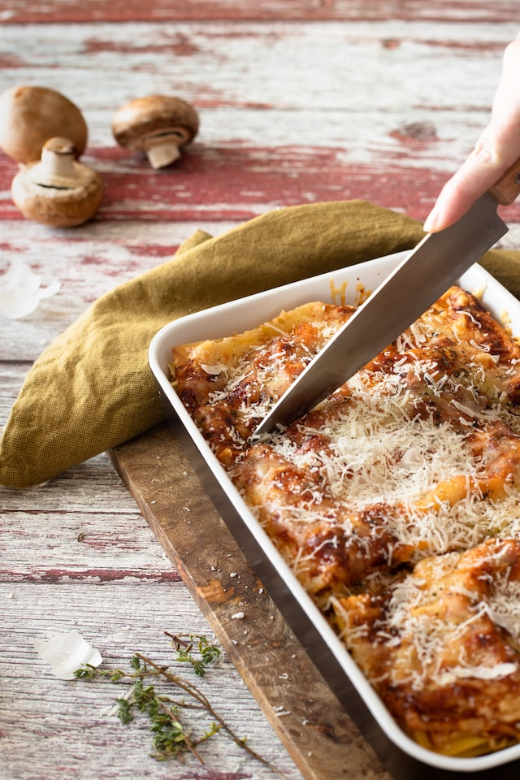

Lasagna

Discription
One of the most loved foods in the world! This is a lasagna made the traditional Italian way, with a slow cooked ragu and a béchamel sauce ("Besciamella"). No ricotta - that's the American-Italian version. Though it requires patience to make, it is worth every minute. The ragu bolognese is melt-in-you-mouth tender and the sauce is rich and thick. Makes 8 giant or 10 normal servings
Indigredients
- 1 tbsp olive oil
- 1 onion
- 1 medium carrot
- 1 rib / stick of celery
Steps
- In a large skillet, heat oil over medium-high heat. Add ground beef and cook until no longer pink, about 5 minutes. Add onion and garlic and cook until onion is tender, about 5 minutes. Add salt and pepper and cook until beef is no longer pink, about 5 minutes.
- Add lasagna noodles and cook until al dente, about 5 minutes. Drain noodles and add to skillet. Add remaining ingredients and cook until noodles are tender, about 5 minutes.
- Serve immediately.
back to the menu